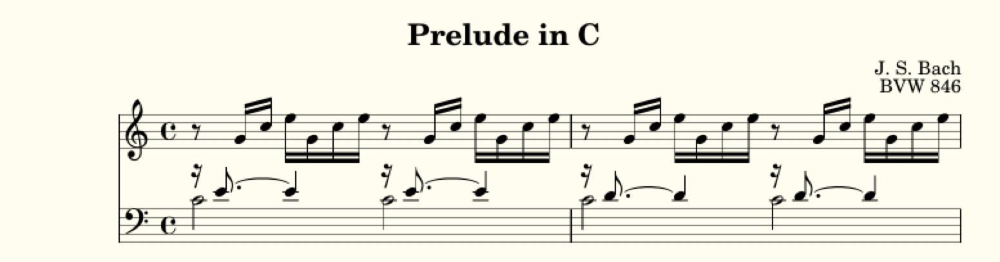
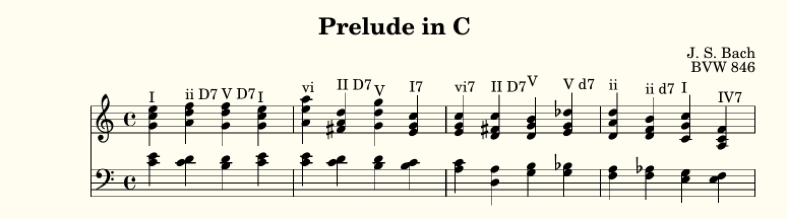
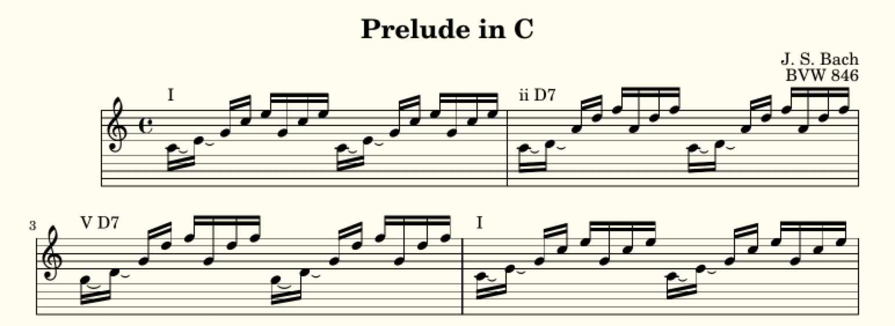

Prelude in C¶
This and the next chapter go through a couple of demo pieces to show LilyLib in action. First we’ll start with Bach’s Prelude in C. There’s actually four different versions of this demo, of increasing complexity, and we’ll go through them in order.
Simple¶
The most basic demo is in demo_prelude_in_c_simple.py. As the name suggests this is quite simple. The main thing is to realize that the piece is constructed around an 8 note motif that progresses through different chords. So, for some basic refactoring, this demo first creates a function that produces this motif:
def motif(c):
tones = tonify(c)
self.score["bass"] += 2 * voices(rest(16) + notes(select(tones, 2), ['8.', 4], "~ "), note(select(tones, 1), 2))
self.score["treble"] += 2 * (rest(8) + notes(pattern(tones, 2 * [3, 4, 5]), 16))
This function gets passed a five note chord (c) and then it adds the first two notes to the bass clef, and adds the 3rd, 4th and 5th to the treble (twice). The treble clef if semiquavers, preceded by a quaver rest. The bass clef has two voices because the notes are held. Both parts are doubled, because the motif is repeated twice for each chord.
After this the piece lists the different chords to be applied to the motif:
bar = [''] * 40
bar[1] = 'c` e` g` c`` e``'
bar[2] = 'c` d` g` c`` e``'
bar[3] = 'b d` g` d`` f``'
bar[4] = 'c` e` g` c`` e``'
These are simple strings, put in a list called bar. We start counting from 1, and because the motif is one bar long this means that _bar[x]_ contains the chord played in the xth bar of the piece.
We then iterate through the chords, applying the motif function as we go:
for c in bar:
if c:
motif(c)
The end of the piece actually does something a bit different, so we need a bit more code:
def held_bass(tones):
tones = tonify(tones)
return voices(rest(16) + notes(tones[1], ['8.', 4, 2], "~ ~ "), note(tones[0], 1))
def long_melody(tones):
tones = tonify(tones)
return rest(8) + notes(pattern(tones, 1, 2, 3, 4, 3, 2, 3, 2, 1, 2), 16)
self.score['treble'] += long_melody('f a c` f`') + notes('f d', 16) * 2
self.score['treble'] += long_melody('g` b` d`` f``') + pattern(self.scale('d`', 'f`', 16), 1, 3, 2, 1)
self.score["bass"] += held_bass('c, c') + held_bass('c, b,')
self.score['treble'] += [chord('e` g` c`', 1)]
self.score['bass'] += [chord('c, c', 1)]
But with that complete the piece is ready to print:
Intermediate¶
The simple demo works fine, but listing out the chords note-for-note means we don’t make any attempt to understand what the piece is doing, we also don’t use any of the LilyLib functions like arpeggio. That’s where we go next in demo_prelude_in_c.py. Rather than list the notes in each chord, we describe what each chord is:
bar = [''] * 40
bar[1] = self.arpeggio('c`', 'e``')
bar[2] = omit(arpeggio7('c`', 'f``', 'D Minor'), 3, 5)
bar[3] = omit(dominant7('b', 'f``', 'G Major'), 3, 5)
bar[4] = bar[1]
Now whether this is more readable or not is debateable. But it is undoubtedly more explicit about the harmonic changes going on, and the structure of the chords. So the opening bar is an arpeggio in the root chord, then it moves to D Minor (which could also have been referenced as self.II), G Major (or self.V), before coming back to C Major. Note that we can take advantage of the fact that bar 4 is the same as bar 1 to explicitly make them copies of each other.
Applying this to the whole piece takes a little while, but once it’s done you get the same nice sheet music.
Advanced¶
LilyLib let’s yopu manipulate music in helpful ways. Let’s look at two specific examples in demo_prelude_in_c_fancy.py. First, imagine that you know Prelude in C well enough to not need to see the motif. What you really want is just a list of the chords. Second, let’s imagine you want to see the name of the chords on the sheet music too, just to remind you what’s going on harmonically. The motif function generates the motifs, and we can modify it to do both of these things. First we create two properties:
def details(self):
self.title = "Prelude in C"
self.composer = "J. S. Bach"
self.opus = "BVW 846"
self.summary = True
self.annotate = True
When summary is True the motif function will return a single chord instead of an extended motif. When annotate is true the motif function will annotate the sheet music with the chord’s name. But LilyLib isn’t clever enough to know what chords are named, so we need to provide the names. We do this my making each bar a tuple containing both the notes, but also the name:
bar = [''] * 40
bar[1] = (self.arpeggio('c`', 'e``'), 'I')
bar[2] = (omit(arpeggio7('c`', 'f``', 'D Minor'), 3, 5), 'ii D7')
bar[3] = (omit(dominant7('b', 'f``', 'G Major'), 3, 5), 'V D7')
bar[4] = bar[1]
Next we modify the motif function to respond to both properties and change its behavior accordingly:
def motif(c):
tones = tonify(c[0])
if self.summary:
bass = chord(subset(tones, 1, 2), 4)
treble = chord(subset(tones, 3, 5), 4)
else:
bass = 2 * voices(rest(16) + notes(select(tones, 2), ['8.', 4], "~ "), note(select(tones, 1), 2))
treble = 2 * (rest(8) + notes(pattern(tones, [3, 4, 5, 3, 4, 5]), 16)) + ["\n"]
if self.annotate:
name(treble, c[1])
self.score["bass"] += bass
self.score["treble"] += treble
That’s it! Here’s the sheet music that prints when both properties are set to True:
For someone who is comfortable with this piece, the sheet music in this format is perfectly easy to read, but also more informative than the regular sheet music. Critically it takes less than an hour to modify the basic LilyLib code to produce this format.
Experimental¶
Piano music is typically written across two staves. Often these correspond to the two hands, but this is often not the case too. Even when it is the case, the separation of the hands in this way can mask the unity of what the hands are doing. This is the case in Prelude in C: The two hands are actually playing a single voice (let’s ignore that the left hand notes are held, but the right hand notes are not). To better convey this I have been experimenting with a single combined staff. It resembles the traditional treble and bass staves, but the gap between them is “anatomically correct” and the music freely flows across them. This is baked into LilyLib, here’s how to implement it:
First, in the details, set the staves to a single Super staff:
def details(self):
self.title = "Prelude in C"
self.staves = [Super()]
Next, modify the motif function to print both hands as separate voices on the same staff (treating the hands as separate voices keeps the stems of the two hands separate):
def motif(c):
tones = tonify(c[0])
if self.summary:
motif = voices(chord(subset(tones, 3, 5), 4), chord(subset(tones, 1, 2), 4))
else:
motif = 2 * voices(
['\\override Rest.transparent = ##t'] + rest(8) + 2 * notes(pattern(tones, 3, 4, 5), 16),
['\\override Rest.transparent = ##t'] + notes(select(tones, 1, 2), 16, "\\laissezVibrer") + rests(8, 4)
)
if self.annotate:
name(motif, c[1])
self.score['treble'] += motif
All the stuff about rest transparency is to make rests invisible, this is to avoid cluttering the music given that there are two voices on the same staff. I also use laissez vibrer marks on the left hand, rather than multiple notes with ties. That’s basically it, here’s what the music looks like:
Maybe you like this (I do), maybe you hate it. The point is not that this is a good way to write music, the point is that LilyLib let’s you quickly rewrite music in multiple different ways with just a few tweaks to different functions.